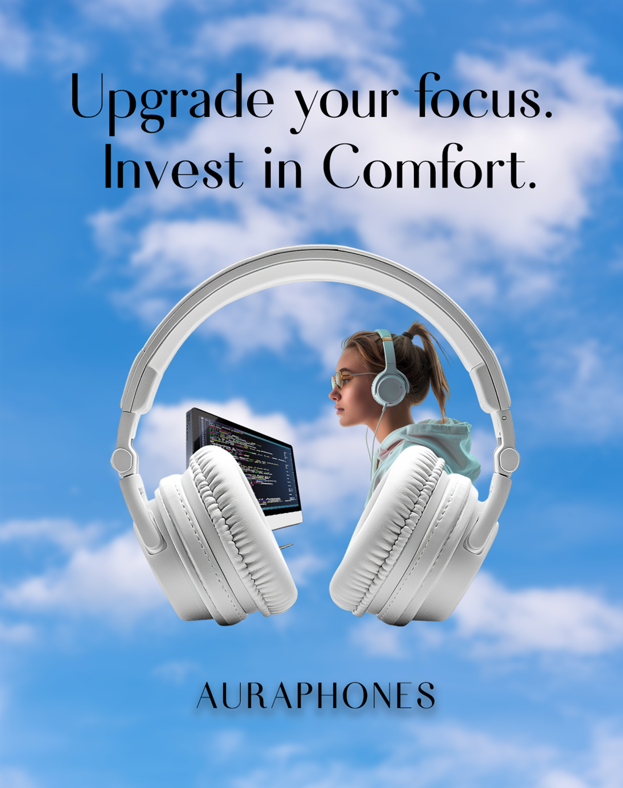
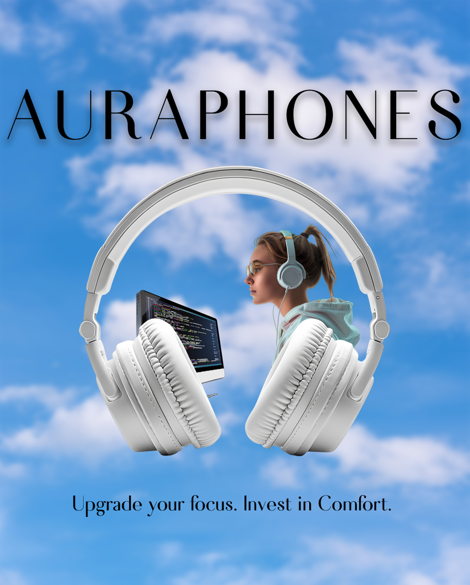
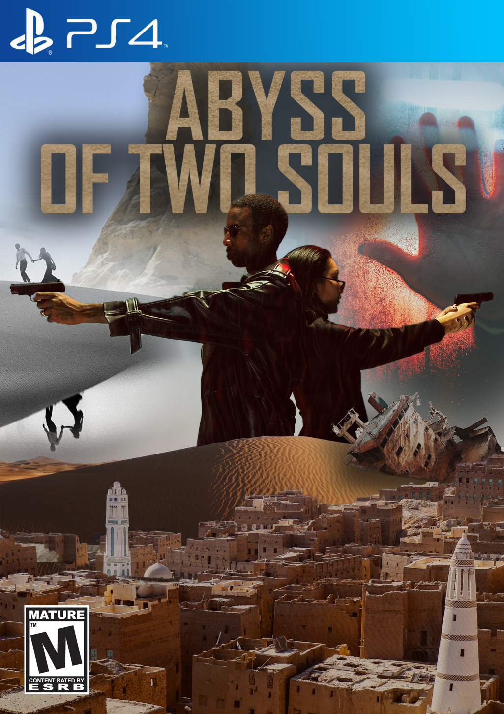
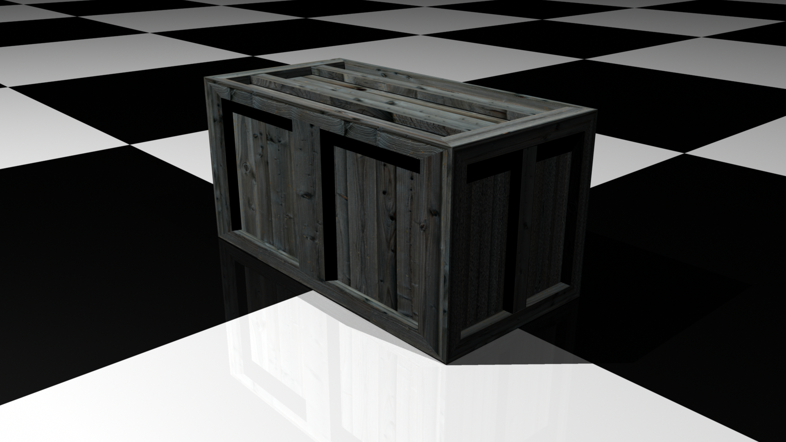
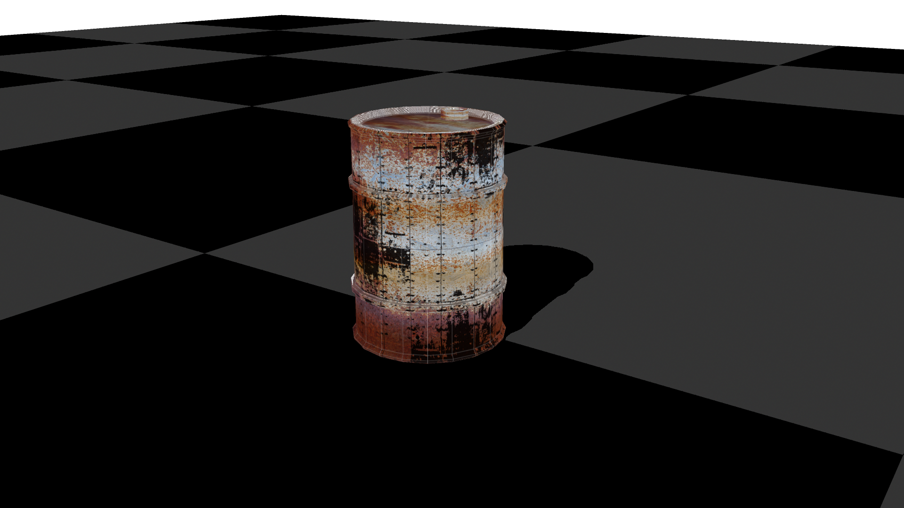
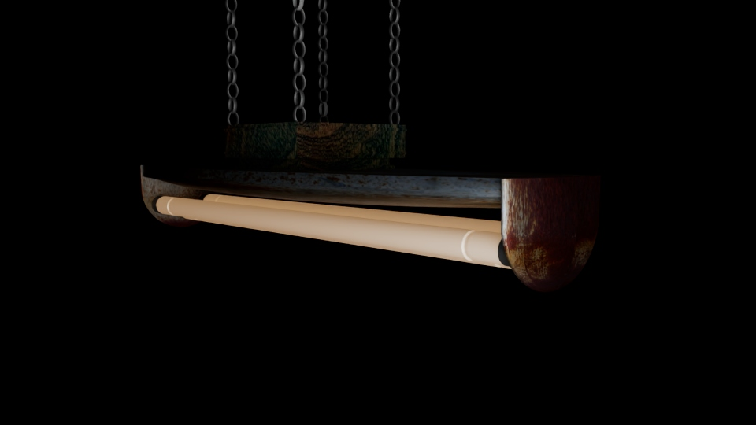
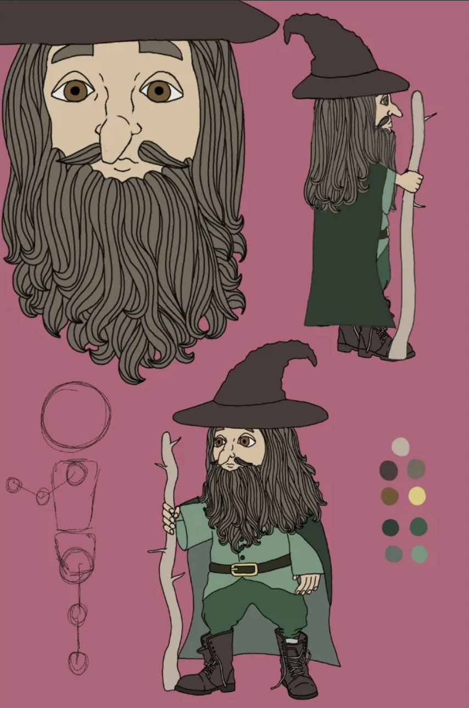
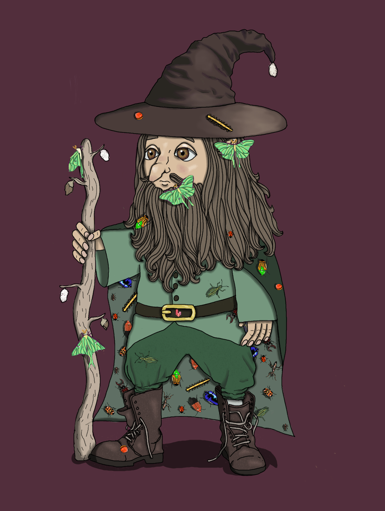
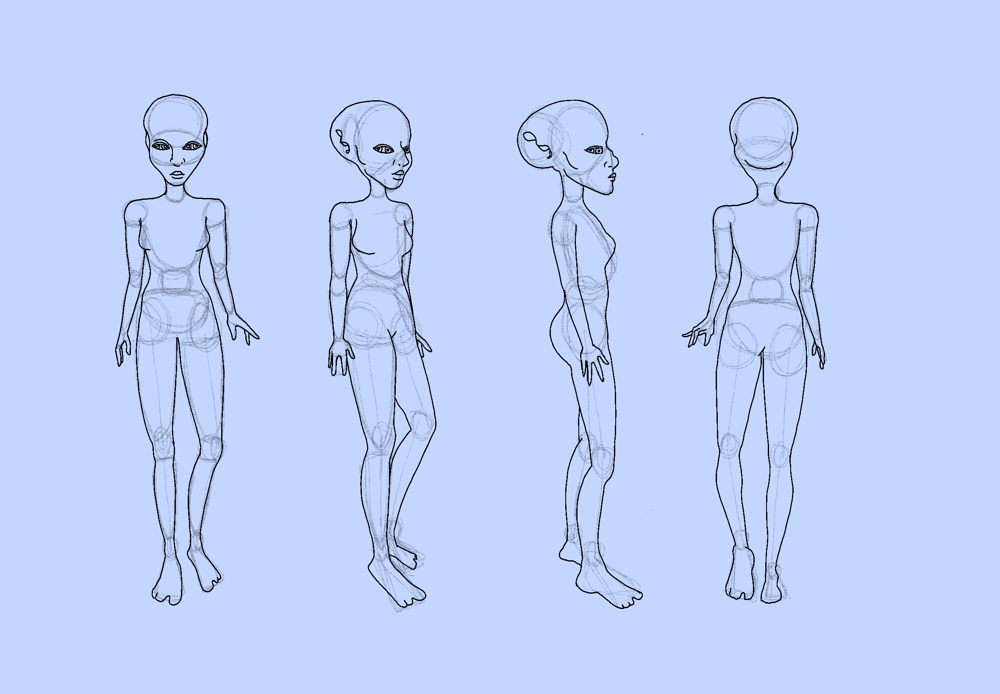
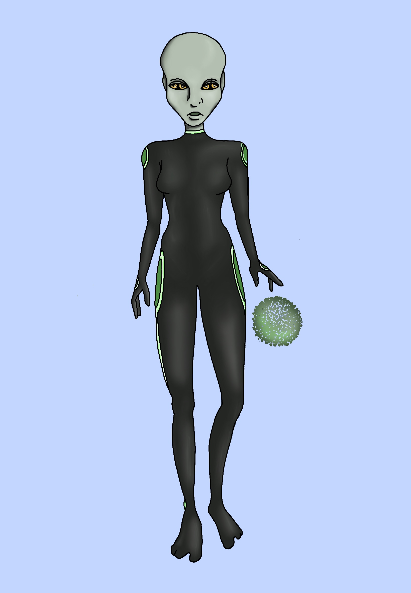

Hello, my name is Amber Nave and I am a digital media student and junior graphic designer. My passion for art started as a young child and has not faltered since. I enjoy design in many aspects, which has allowed me to grow a solid foundation in visual arts and digital design. My work focuses on clean layout, visual hierarchy, and production-ready assets for digital and print platforms. I have experience creating advertising campaigns, branding elements, packaging mockups, and front-end web projects. I enjoy combining creativity with structure to ensure each design is visually appealing and functional. This page showcases selected projects that reflect my technical development and creative growth. I am excited to continue growing my skills and experience in the design industry.



This advertising campaign explores visual emphasis in product marketing. Three variations of the same advertisement were designed to highlight different elements of the brand: the product, call-to-action, and logo. The project focuses on layout, typography and visual storytelling to guide the viewer's attention.


This packaging design was created for a fictional tea brand. The project focuses on developing a bold, recognizable pattern that could cross multiple packaging surfaces. The design uses contrasting colors and abstract shapes to create an eye-catching product that stands out on a shelf.


These projects explore visual storytelling within entertainment media. The game cover and movie poster were designed to communicate genre, mood, and narrative through composition, typography, and illustration. Both pieces focus on creating dramatic imagery that captures attention and establishes a sense of world and conflict.




These 3D prop models were created to practice environmental asset design. The objects focus on realistic materials, surface texture, and lighting to create believable worn and industrial props. Each model was designed and rendered to explore form, material properties, and environmental storytelling.


This character design explores a stylized fantasy wizard named Entor. The design includes multiple views to establish the character’s proportions, costume details, and silhouette. Moths were incorporated into the character’s clothing and staff to create a mystical theme and add visual storytelling elements.


This character design features an alien protagonist developed for an animated short. The turnaround sheet was created to
establish accurate proportions and views for animation, including front, side, three-quarter, and back perspectives.
The final character design focuses on simple shapes and color choices to create a recognizable
and expressive character.


This short animation follows an alien character who restores life to a barren planet using a glowing energy orb. The project explores environmental storytelling, lighting, and camera movement to create a calm and atmospheric narrative. These still frames capture key moments from the animation that highlight mood, setting, and character interaction with the environment.